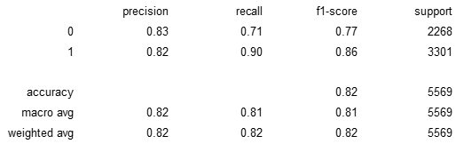
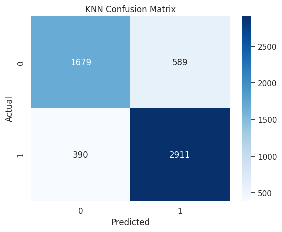
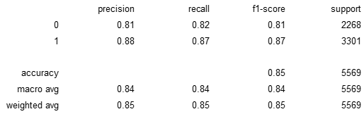

Model Training & Evaluation
Performance Analysis of Depression Prediction Models
Model Training
Selected Models
- Logistic Regression: A fundamental and interpretable linear model, well-suited for binary classification tasks and offering strong baseline performance.
- K-Nearest Neighbors (KNN): A simple yet effective non-parametric model that makes no assumptions about data distribution, ideal for smaller to medium datasets.
- Random Forest: A powerful ensemble method that reduces overfitting and captures feature importance, providing robust predictions on complex datasets.
- Support Vector Machine (SVM): Highly effective in handling well-separated classes, with flexibility to manage non-linear patterns through kernel functions.
Reasons for Selection
- To ensure a diverse set of models for performance comparison across different algorithmic approaches.
- To include both simple models (Logistic Regression, KNN) and complex models (Random Forest, SVM) for a balanced evaluation.
- To match the characteristics of the dataset, which contains multiple features and a large number of samples, requiring both interpretability and scalability.
Results & Evaluation
Model Performance Analysis
Logistic Regression
Scikit-learn Implementation
Scratch Implementation
ROC Curve Analysis
Scikit-learn Implementation

The ROC curve shows excellent model performance with an AUC of 0.92, indicating strong classification ability.
Scratch Implementation

The custom implementation achieves the same AUC of 0.92, proving its correctness and effectiveness.
Confusion Matrix
Scikit-learn Implementation

The model accurately predicts most cases, with 2916 true positives and 1819 true negatives.
Scratch Implementation

The results are nearly identical to the Scikit-learn version, with only minor differences in prediction counts. This further supports that the scratch implementation is functionally equivalent and reliable.
K-Nearest Neighbors (KNN)
Scikit-learn Implementation
Scratch Implementation
ROC Curve Analysis
Scikit-learn Implementation

The KNN model with Scikit-learn performs well, achieving an AUC of 0.89 with a strongly curved ROC.
Scratch Implementation

The scratch version replicates the same AUC of 0.89, indicating it was correctly and efficiently implemented.
Confusion Matrix
Scikit-learn Implementation
The model predicts 2911 true positives and 1679 true negatives, but has slightly more false positives.
Scratch Implementation
This version has 2970 true positives and fewer false negatives, showing slightly better recall performance.
Random Forest
Scikit-learn Implementation
Scratch Implementation
ROC Curve Analysis
Scikit-learn Implementation

The Scikit-learn Random Forest model performs excellently with an AUC of 0.92, showing strong classification capability.
Scratch Implementation

The scratch version achieves the same AUC of 0.92, confirming that the ensemble logic was implemented successfully.
Confusion Matrix
Scikit-learn Implementation
The confusion matrix shows good balance between classes with slightly higher recall for positive cases (0.88) than negative cases (0.79), providing reliable predictions.
Scratch Implementation
Similar class balance to the scikit-learn version, with marginally lower recall for negative cases (0.78), validating our tree ensemble implementation's effectiveness.
Support Vector Machine (SVM)
Scikit-learn Implementation
Scratch Implementation
ROC Curve Analysis
Scikit-learn Implementation

The Scikit-learn SVM model performs strongly with an AUC of 0.92, indicating excellent discriminative power.
Scratch Implementation

The scratch SVM implementation achieves the same AUC of 0.92, showing successful replication of the kernel logic.
Confusion Matrix
Scikit-learn Implementation
SVM balances well between classes with similar recall rates for both positive (0.88) and negative (0.80) cases, making it suitable for general classification tasks.
Scratch Implementation

Our implementation shows slightly better performance on negative cases (0.82 recall) with marginally lower positive recall (0.87), a promising result for a custom implementation.
Model Comparison
| Model | Precision | Recall | F1-Score | Accuracy | AUC |
|---|---|---|---|---|---|
| Logistic Regression (Scikit-learn) | 0.8666 | 0.8834 | 0.8749 | 0.8502 | 0.92 |
| Logistic Regression (Scratch) | 0.8682 | 0.8843 | 0.8762 | 0.8519 | 0.92 |
| KNN (Scikit-learn) | 0.8317 | 0.8819 | 0.8561 | 0.8242 | 0.89 |
| KNN (Scratch) | 0.8195 | 0.8997 | 0.8578 | 0.8231 | 0.89 |
| Random Forest (Scikit-learn) | 0.8604 | 0.8791 | 0.8696 | 0.8438 | 0.92 |
| Random Forest (Scratch) | 0.8552 | 0.8697 | 0.8624 | 0.8355 | 0.92 |
| SVM (Scikit-learn) | 0.8660 | 0.8846 | 0.8752 | 0.8504 | 0.92 |
| SVM (Scratch) | 0.8751 | 0.8679 | 0.8715 | 0.8483 | 0.92 |
From the comparison table, all models demonstrate strong classification performance, but notable differences appear when evaluating across Precision, Recall, F1-score, Accuracy, and AUC:
- Logistic Regression (Scratch) slightly outperforms its Scikit-learn counterpart in all four metrics (F1-score: 0.8762, Accuracy: 0.8519), making it the top-performing model overall.
- Support Vector Machine (Scikit-learn) also performs exceptionally well, achieving the highest Accuracy (0.8504) among Scikit-learn models, and a strong F1-score of 0.8752.
- KNN (Scratch) yields the highest Recall (0.8997) among all models, which is beneficial when identifying as many positive (depressed) cases as possible, though its precision and accuracy are slightly lower.
- Random Forest (Scikit-learn) offers a balanced trade-off across all metrics (F1-score: 0.8696, Accuracy: 0.8438) and maintains a strong AUC of 0.92, confirming robust performance.
- SVM (Scratch) achieves the highest Precision (0.8751), making it excellent for applications where false positives are particularly costly.
- All models except KNN achieve an AUC of 0.92, showing consistent discriminative power, while KNN models have slightly lower AUC (0.89), indicating modestly weaker boundary definition.
In conclusion, Logistic Regression (Scratch) and SVM (Scikit-learn) emerge as the most reliable models in this context, with strong generalization and high classification metrics, while KNN (Scratch) stands out for maximum sensitivity.